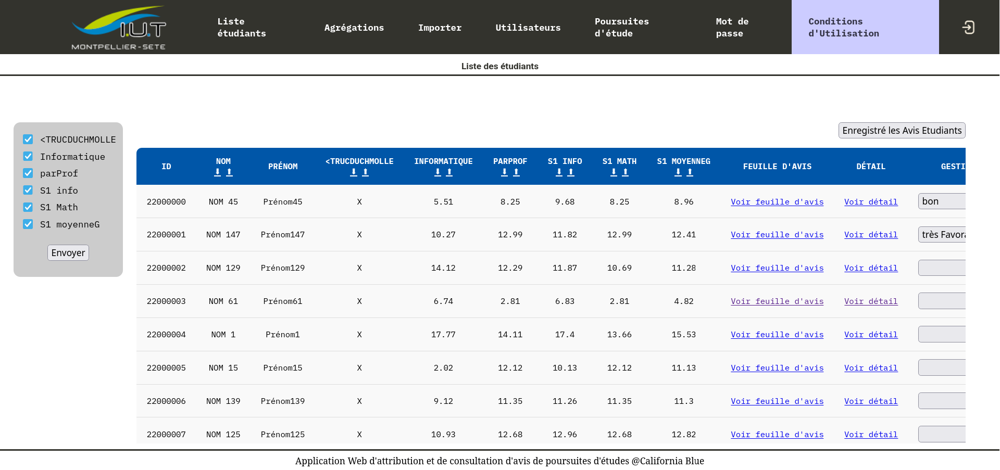
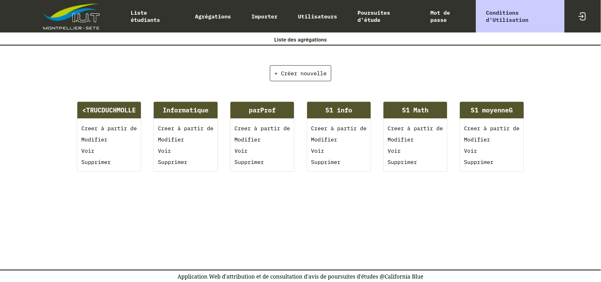

~/$ cat SAE_S3.md
Le site de poursuite d'études
La SAE du troisième semestre (ou premier semestre de la deuxième année) était le projet de la plus grande envergure jusque là, en équipe de 5, et étant de loin le plus proche d'un réel projet Informatique. Nous avions 4 mois pour réaliser un site web de gestion de poursuite d'études, sans base de code, et sans réelle directive au départ.
Toute information venait d'un professeur jouant le rôle de notre client, à qui le Product Owner (membre du groupe qui communique avec le client) désigné de notre équipe devait poser toutes les questions qui pouvaient être utiles pour faire avancer le projet dans la direction souhaité par le client.
En premier lieu, nous avons établis les volontés du client, et fait une réunion d'équipe afin de mettre tout le monde à la page, et de commencer à designer la base de donnée du site.
Une partie importante du site était la création d'agrégations de note. Une agrégation de note est un ensemble de coefficient appliqué à chaque note, pour donner une moyenne qui aura du poids en fonction de certaines notes plus que d'autres.
Exemples : Si je met un plus gros coefficient aux notes de contrôles de réseau, j'aurais une agrégation de notes qui m'aidera à déterminer s'il est judicieux ou non qu'il envisage une poursuite d'étude dans ce domaine.
Au début, 3 types d'utilisateurs allaient pouvoir interagir de différente manière avec le site :
- les Responsables de poursuite d'étude
- Créer des agrégations
- Remplir les avis de poursuite d'étude
- Consulter les notes agrégées de tous les étudiants
- Les Professeurs, qui peuvent :
- Créer des agrégations
- Voir les avis de poursuite d'études de chaque étudiant
- Consulter les notes agrégées de tous les étudiants
- Les Écoles externes
- Créer des agrégations
- Consulter les notes agrégées des étudiants qui ont postulé pour elles
Ensuite, le client a voulu que les étudiants puissent aussi pouvoir se connecter au site, afin de candidater depuis ce dernier, et d'accéder à leurs notes.


Technologies utilisées pour ce projet :
Ce projet a demandé beaucoup d'investissement, en particulier car nous utilisions beaucoup de technologies et de méthodes de travail dont nous n'avions pas l'habitude, et que nous apprenions en même temps que nous faisions le projet.
Dans l'ensemble ce fut une très bonne expérience, car j'ai principalement travaillé avec des personnes que je ne connaissait pas, même avec les aléas qui arrivent avec les projets de développement à côté des cours.

- Prenom : Yann
- Nom : Bodiguel
- > About me
- - - - - - - - - - - - - - - - -
- Compétences :
- > Java
- > WEB
- > SQL
- - - - - - - - - - - - - - - - -
- Projets :
- > SAE Trains
- > SAE 3eme Année
- > Nuit de l'Info